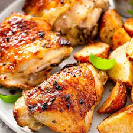

Baked Chicken

Description
This is the most popular of all chicken breast recipes that I’ve ever published. It’s a JUICY Oven Baked Chicken Breast sprinkled with a magic simple seasoning then baked until caramelised. It’s simple, fast and incredibly tasty!
Ingredients
- Chicken
- Baking Machine
- Integrity
Steps
- Preheat oven to 425°F/220°C (200°C fan).
- Pound chicken to 1.5cm / 0.6" at the thickest part - using a rolling pin, meat mallet or even your fist (key tip for even cooking + tender chicken).
- Line tray with foil and baking / parchment paper. Place chicken upside down on tray. Drizzle chicken with about 1 tsp oil. Rub over with fingers. Sprinkle with Seasoning.
- Wait 3 - 5 minutes before serving, garnished with freshly chopped parsley if desired. Pictured with a side of Garlic Butter Rice with Kale.